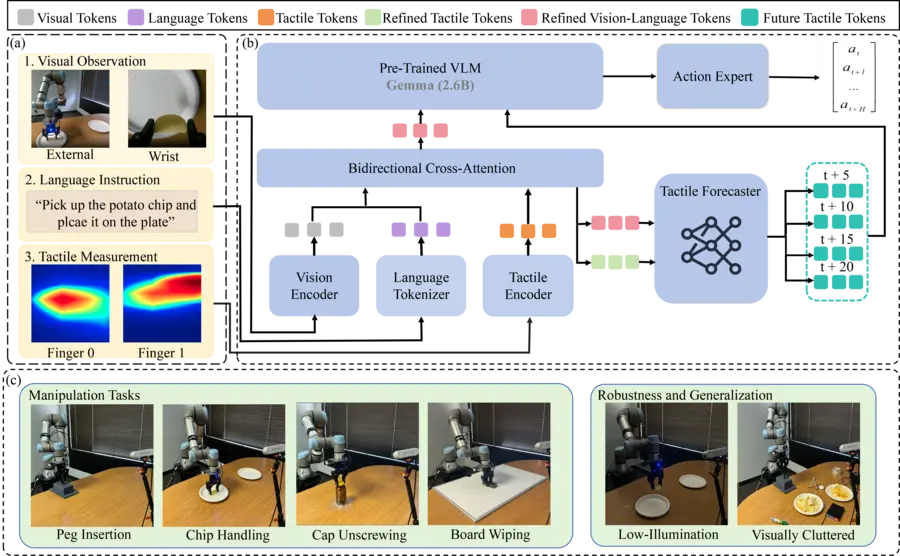

ForeTac-VLA: A Forecasting-Based Tactile-Vision-Language-Action Model for Contact-Rich Robotic Manipulation
arXiv preprint, 2026
ForeTac-VLA introduces forecasting-based tactile conditioning for contact-rich manipulation, combining temporal tactile encoding, bidirectional cross-attention, and multi-step tactile prediction to improve action generation.